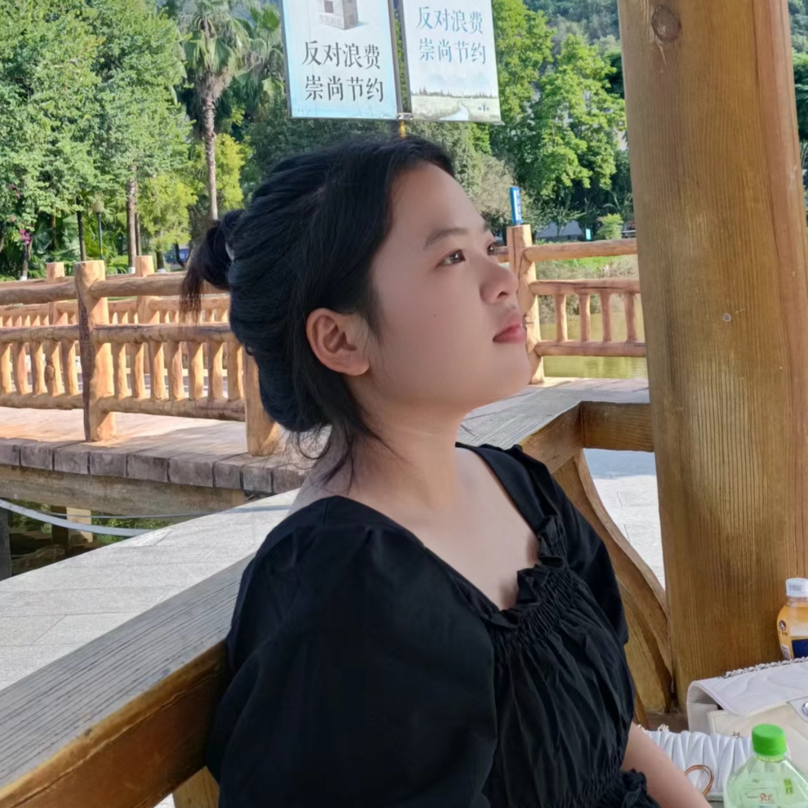
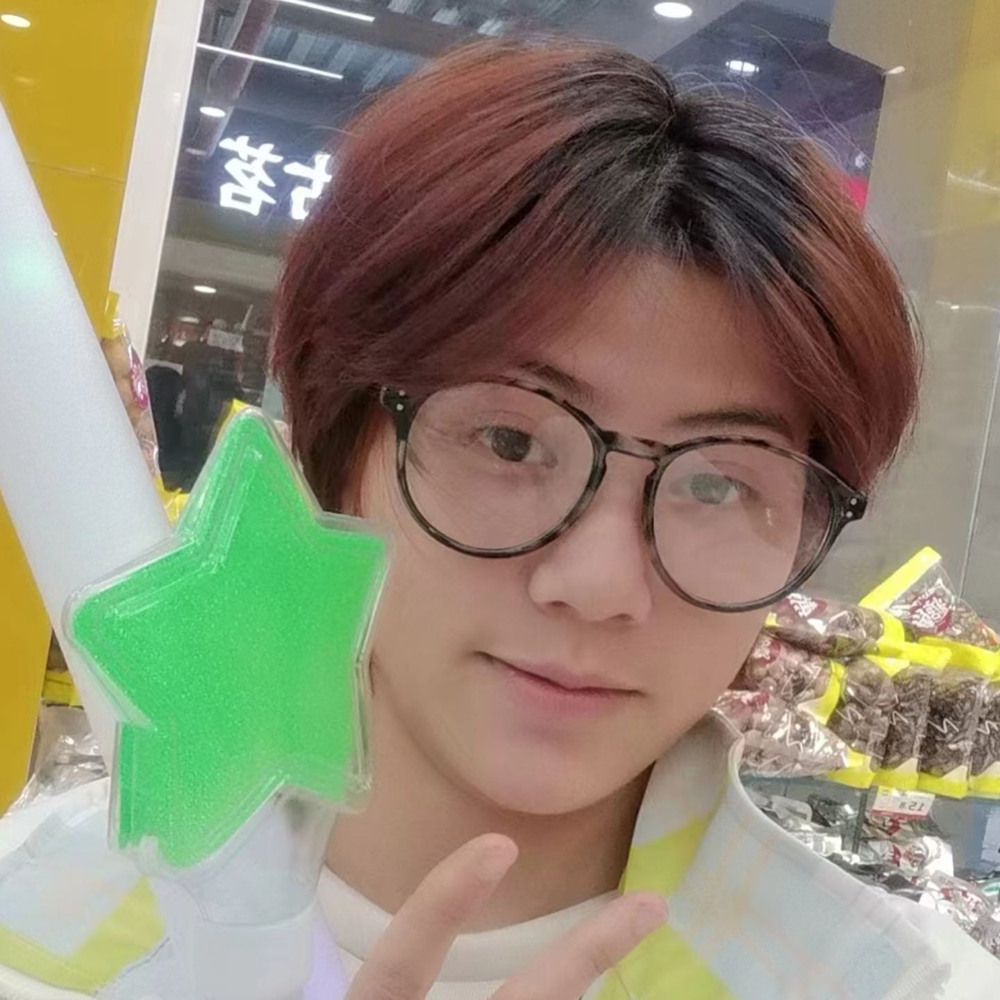
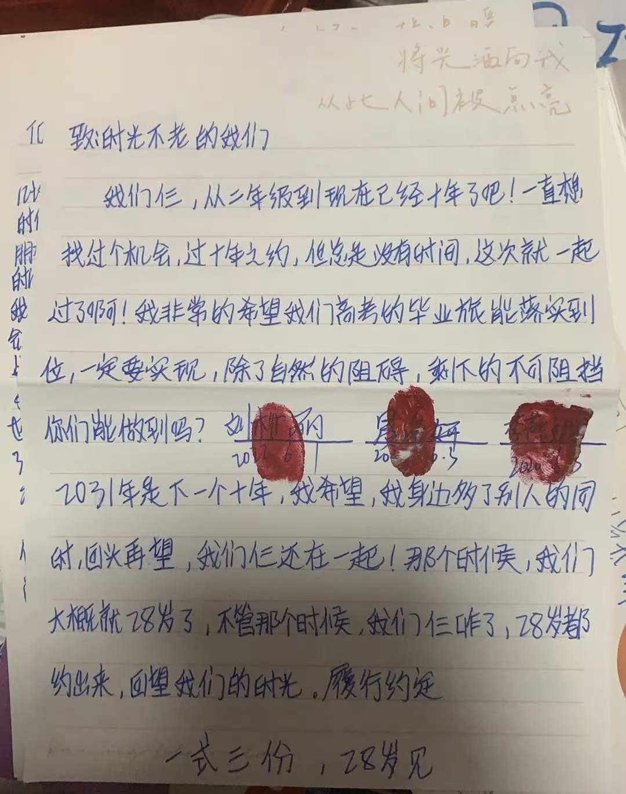
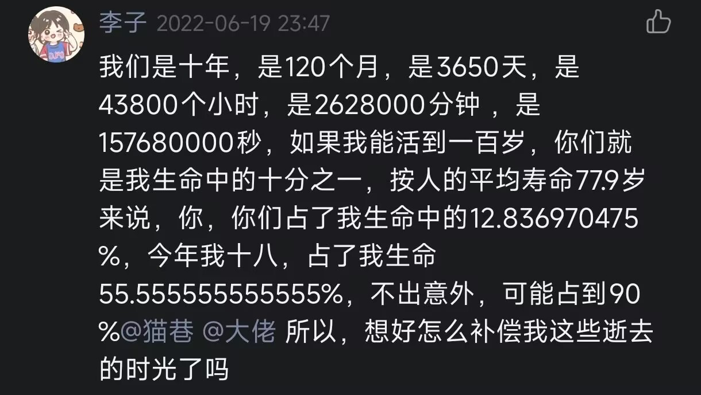
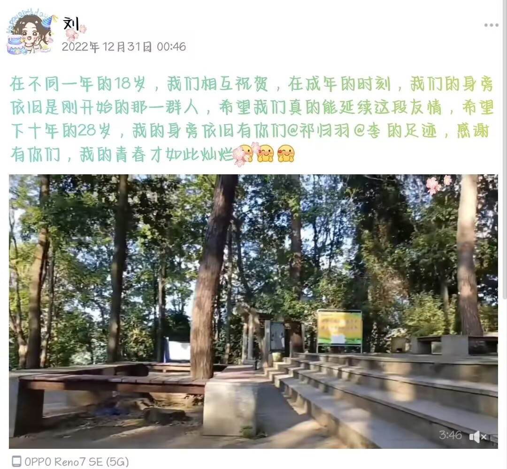
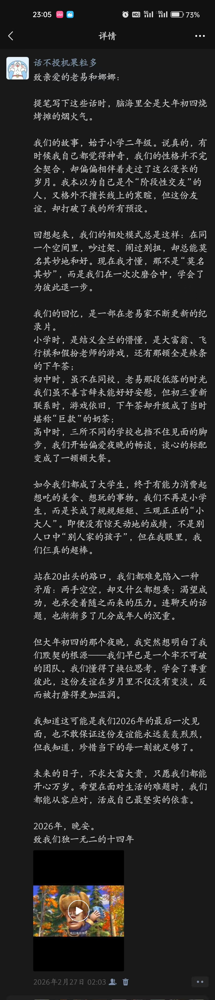
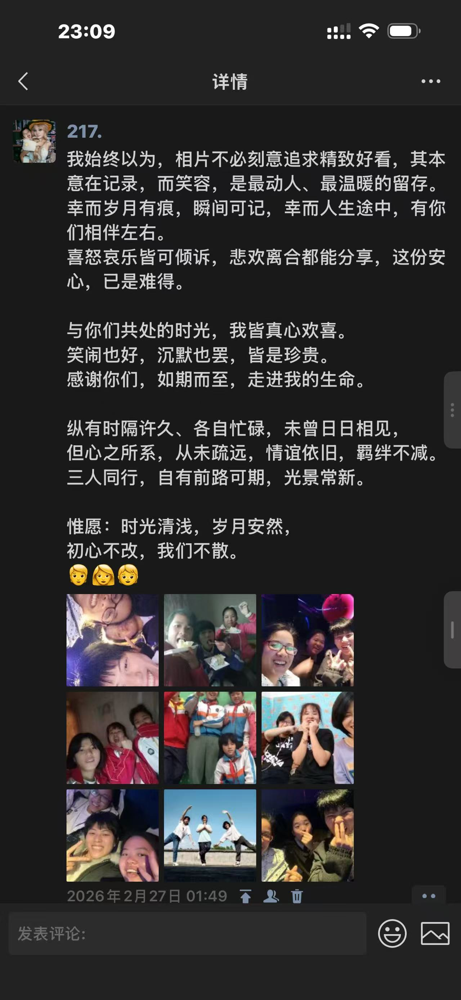
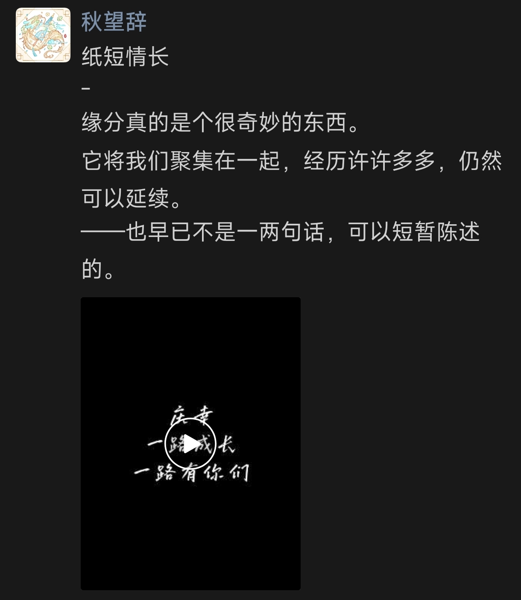

欢迎来到我们的角落
这里存着一些光，一些笑，和一些不想忘的瞬间
'">
'">
● 点击播放
💫 “最好的关系，是各自忙碌又互相惦记。”
我们
三个人的故事
时光轴
串起重要时刻
相册
每一张都是故事
音乐
属于我们的歌曲
互动
回忆挑战+彩蛋
寄存处
约定·信件·愿望寄存
🔼 我们
最稳固的形状是三角，而我们刚好三个
🦊'">🐱'">
小龙虾

🐰'">👆 点击头像，看看我想对TA说的话
📝 关于我们，TA们说
我问了她们几个问题，答案在这里——
0
开场先介绍一下自己吧～
大龙虾：我叫刘柳丽，今年22岁，喜欢看小说，特别是言情小说(霸道总裁类的)，还非常喜欢吃重口味的食物，希望可以吃遍全中国的美食。
小龙虾：我是YYY，喜欢看小说写小说唱歌听歌...好吧喜欢的东西挺多的，列举不过来，日常就是一整个随性而为，喜欢做喜欢的事，比如创建这个网页。
小小龙虾：就叫小李吧，兴趣爱好的话，喜欢唱歌、听音乐喜欢风一样、比较自由的感觉，喜欢比较有氛围感、暧昧的感觉，喜欢开车兜风，喜欢躺在草坪上，还有运动，虽然现在很少运动。
1
我们之间发生过最搞笑的事是什么？
大龙虾：我觉得最搞笑的就是在你家玩大富翁。我记得我是赚钱赚的最多的，然后你和李燕娜都欠我的过路费。虽然我的这个钱都是通过手段赚来的，因为抽命运和机会的那个纸条补充的有几个是我写的，然后我做了个小小的手段。但我那个时候觉得真的很开心。
小龙虾：最搞笑的应该就是小学的上课角色扮演了吧，还有结拜也好好笑，那个时候一个娱乐活动很纯粹很自然就能玩好久，我还记得那会儿我们当老师要轮流出去再进来，而且为了模仿像一点还特地跑到厕所去。
小小龙虾：我记得不太清楚，印象没有那么多，就是她（大龙虾）说的那几件也还行，还有我们在你家玩游戏演戏，当老师什么的，真的很搞笑。
2
你印象最深的一次三个人一起做的事是什么？
大龙虾：是那一年我们三个都初中毕业，然后我和李燕娜去你家找你，我们一起去河堤上面拍照，就是拍照的那一次，我觉得那时候拍出来的照片真的很好看，很有感觉，而且那时候的阳光，天气，白云都是刚刚好的。
小龙虾：烧烤啊，有一次烧烤到十一二点，挺开心的，像那种谈心环节多数时候都挺好的。
小小龙虾：我记忆力不太好，一个就是泗州岛那回吧，最深的印象就是被狗追。还有一个不是泗州岛，就是去到一个山顶去看哪个日出，开了很长的车，遇到很高的坡，那个好像叫黄梅山。好像就是在那里唱的那个童话。（小龙虾回顾：很遗憾你记反了）
3
那有没有哪件事是你一直想和我们一起做但还没做的？
大龙虾：我想我们三个一起去旅游，完成那一回的毕业之旅。去海边。
小龙虾：在同一家公司上班算不算？我想的是在同一个学校上学，但是这个显然不能实现了，只能期望一下同公司上班，还有就是一起去旅游吧，但是希望我们都能放松的旅游，不紧紧巴巴。
小小龙虾：就是去旅游吧，真的还没有一起去旅游过。（但你们两个有去过，讨厌鬼。）
4
如果用三个词形容我们三个人，你会选哪三个词？
大龙虾：（一开始理解偏差的回答：情比金坚，希望我们的友情像黄金一样坚不可破。一直闪耀发光。）我 乐天脆弱，易 历久弥坚，李 不动声色
小龙虾：大佬勇敢热情、李子沉稳开朗，我内敛敏锐
小小龙虾：感觉上，就我们上次讨论过的风火水，但也不完全是，它的意象还不够准确，三个词的话，一个是惊喜，一个是热烈，一个是什么，剩下这个是说我自己，如果是按照风来说的话，就是龙卷风。
5
你觉得我们三个人之间最像什么？
大龙虾：我觉得我像孙悟空，李燕娜像唐僧，老易像沙悟净。因为我觉得李娜像唐僧他可以稳住大家的情绪，就是一个像一个调和剂一样的存在。老易想沙悟净是可以把在默默的支持大家的各种决策，是一个很好的倾听者。我觉得我像孙悟空是他有点暴躁，但是他又是那种就是在朋友遇到困难的时候，会勇于出于帮助的
小龙虾：像什么……好难回答的问题，像树吧，三颗幼年时期就长在一起的树，枝叶交叉的时候，你也说不清为什么它们会这么长。而后三棵树共同成长，愈长愈大，或许期间会经历雷雨狂风，但也始终扎根大地，不曾倒下。天气或许也有偏颇，给予每棵树的云层都不一样，有些总是持续降雨，有些会下雪，有些会打雷，但它们还是顽强的生长，直到如今。
小小龙虾：三朵云吧，我也不敢说它是最像的，但如果说三朵云的话，就是一个雨多一点，一个雨少一点，一个中等一点，其实我们的雨量是差不多的，只是在某个时间段，它会变多变少。有的时候可能会有不同颜色的云，（小龙虾）比较蓝一点，（大龙虾）比较橙一点，还有一个（我）比较黄一点。
6
我们之间让你觉得最安心的时刻是什么？
大龙虾：我们聚在一起，然后来诉说最近发生的事情，倾听烦恼的时候，这一刻我是觉得最安心的。聊天畅想未来的时候，很安心哦[害羞][害羞][害羞]
小龙虾：最安心的时刻应该是谈心阶段吧，是那些让人感到舒适的时候，因为你知道你说什么都不会被忽然指责，谩骂，或者冷暴力。其实这很难得。我是一个对安全感非常有需求的人，进入大学见识到更多以后，就更明白这份安心感的珍惜程度。毕竟人一生能有几个可以聊这些话题的人呢。
小小龙虾：一个是谈心的环节，一个是欢快娱乐的环节，一个是平静的环节，就是有一种走在风里的感觉。（小龙虾评论：抽象派）
7
你觉得我们三个人能走到今天，最主要是因为什么？
大龙虾：这个问题我觉得我之前回答过就是我们年初四烧烤那会，我也想过这个问题，我觉得就是我们三之间从小时候的不懂，到现在的，理解对方，明白对方，会换位思考。就像一个三角形一样，是最坚韧的，缺一是不可的。
小龙虾：我也不知道……这个问题很难解析，我一开始以为距离会切割淡化关系，事实证明确实会有影响，但不会影响太多，也许这主要是因为我们都互相了解，也愿意为一些事情做一些改变。毕竟关系的协调最重要还是因为有那份愿意维护的心嘛。
小小龙虾：角色扮演吧，总有一个人是润滑剂，还有就是，我觉得有一定的相似性，怎么相似呢？这个有点难说。还有一个就是，因为我们能聊到深处去，这个很难说，到底为什么能聊到深处去也不知道。
8
如果我们要一起做一件“疯狂”的事，你希望是什么
大龙虾：我脑海中闪现的就是一个说走就走的旅行，什么都不要顾虑。只要一个说出发，立刻买票。
小龙虾：我好像没有什么疯狂的事情想做的……一起去看雪算不算。
小小龙虾：我第一时间想到的就是淋雨，大雨，第二时间想到的是危险的事情，就是像蹦极一样，刺激的事情。
9
你希望我们十年后在哪里？在做什么？
大龙虾：我希望我们10年后，可以过上经济独立，有解决的问题的能力，不再是遇到问题就退缩哭泣。希望我们都能在自己的领域发光发亮，有一份稳定待遇好的工作。希望我们都能在深圳，离家也近一点，离我们也近一点。
小龙虾：我希望我们十年后都能找到自己想发展的地方，找到自己喜欢或者热爱的工作，并稳固发展，希望我们都能实现各自的愿望。希望十年后的大佬更轻盈（精神上），李子更自信（精神上），我更多才多艺。
小小龙虾：我的心很不定，不是那种闯的感觉，是因为现在身边有人，三个人的话，我不确定我会不会走偏掉，就是可能你们两个就在一个城市里生活，我不知道我的结局会是怎样的。未来的十年，我只希望你们变有钱，然后养我。其它的我不敢说。
10
有什么对未来的自己，未来的我们说的么？
大龙虾：希望未来的我可以成为自已心目中的大人。希望我们仨都能找到一个陪伴一生的佳人，这样就可以从我一个人陪伴你，变成两个人陪伴你，可以收获双份的爱意，希望我们仨不要走散，从儿童到晚年，尽管到最后面走散了，也希望我们好好的，不要大吵大闹。
小龙虾：希望未来的自己也能继承现在的所有优点，并优化那些可能会感到烦恼的“缺点”。希望未来我们都能在各自领域发光发热，当然感情也一如既往。
小小龙虾：还是那句，变有钱，这是第一句，第二句，就开心一点吧，然后自己觉得自己过得好就可以了，幸福最重要。
📅 时光轴
把重要的日子串起来日期不太精确，但记忆是真实的。
约 2012 年
在小学二年级的教室里，我们认识了。大概吧，反正就是那时候。
2012年~2017年
相识之后，我们无数次汇聚在小龙虾家里玩乐，角色扮演、斗地主、大富翁...体验简单而纯粹的快乐。
2017 年 夏
小学毕业了，但我们还在联系。
2019 年 夏
那天是小龙虾的生日，也是大龙虾与小小龙虾初中毕业的时候。我们一起庆祝，还在防洪堤上拍下了许多背景是蓝天的照片，其中有一张被我们用来做群头像。
2020 年 秋
第一次三个人去沧海湖，并在秋千上拍下了一张很好看的照片。
2020 年 冬
那天是大龙虾的生日，我们录下了拆礼物的过程，还一起在她家吃了火锅。
2021 年 春
第一次体验沧海湖的三人单车，并在新年立牌前拍了个照。
2022 年 夏
那天是生日会，为庆祝小龙虾和小小龙虾的生日，也为我们的友谊十周年，大龙虾准备了好多惊喜。我们一起录制了vlog，留下了许多珍贵的回忆。
2023 年 春
01-14：
重返沧海湖，重温三人单车的快乐时刻，并在台阶前打了好几局斗地主。01-22：
那天我们先到白云山，在新建好的西江明珠塔下，在新年的立牌前拍了合照，还在下山时cos了西游记师徒三人。下午是我们第一次三个人去ktv，六个小时的时长足够尽兴，并在太阳落山时悄然将话题延续到了深夜。
01-24：
那个时候太阳很大，却并不炙热，阳光下我们一边烧烤，一边畅聊。那是我们第一次烧烤。
2023 年 夏
高考结束后，我们一起在旺城吃饭庆祝。
2024 年 春
上了大学后的第一次团聚。
2025 年 冬
三个人第一次在省外城市汇合。
2026 年 夏
这个网页诞生了。🌱某个人花了很久才把它搭好。
🖼️ 相册
每一张都是一个故事🎵 歌曲
我们的背景音乐🎶
background
时光不老
🎵 点击列表中的歌曲，歌词会显示在这里
🎮 互动
来玩点不一样的✨ 回忆抽签
点一下，随机掉出一条我们的回忆
👆 点上面试试
🤝 默契大考验
点击选项，看看我们的答案是否一致
❓ 谁最快挂电话？
❓ 谁最能吃辣？
❓ 谁最喜欢鼓捣“惊喜”，鼓捣一些小玩意儿？
❓ 谁的大学离得最远？
❓ 假如我们要去鬼屋，谁最有可能成为“坦克”？
❓ 请问大佬的口头禅是什么？
❓ 请问第一次去沧海湖骑单车时，李子做了什么？
❓ 小学时谁没有公交卡？
🌟 寄存处
时间胶囊 · 曾经的信⏳ 时间胶囊
我们曾经说过的愿望，都封存在这里。
“希望我们一直一直，永远到老。”
—— 小小龙虾
“希望还有下一个十年，一直到老的十年。”
—— 大龙虾
“望友谊长存。”
—— 小龙虾
💌 曾经的信
那些年我们写给彼此的话，纸质版的记忆。
“致：时光不老的我们
我们仨，从二年级到现在已经十年了吧！一直想找过个机会，过十年之约，但总是没有时间，这次就一起过了啊！我非常的希望我们高考的毕业旅能落实到位，一定要实现，除了自然的阻碍，剩下的不可阻挡你们能做到吗？
签字画押：刘柳丽（2022.6.1）、易泳妍（2022.6.3）、李燕娜（2022.6.3）
2031年是下一个十年，我希望，我身边多了别人的同时，回头再望，我们仨还在一起！那个时候，我们大概就28岁了，不管那个时候，我们仨作了，28岁都约出来,回望我们的时光.履行约定
一式三份，28岁见。”

—— 大龙虾 写给 我们
“我们是十年，是120个月，是3650天，是43800个小时，是2628000分钟，是157680000秒，如果我能活到一百岁，你们就是我生命中的十分之一，按人的平均寿命77.9岁来说，你，你们占了我生命中的12.836970475%，今年我十八，占了我生命55.555555555555%，不出意外，可能占到90% @小龙虾 @大龙虾 所以，想好怎么补偿我这些逝去的时光了吗？”

—— 小小龙虾 写给 我们
“在不同一年的18岁里，我们互相祝贺，在成年的时刻，我们的身旁依旧是刚开始的那一群人，希望我们真的能延续这段友情，希望下十年的28岁，我的身旁依旧有你们 @小龙虾 @小小龙虾 的足迹，感谢有你们，我的青春才如此灿烂。”

—— 大龙虾 写给 我们
“致亲爱的老易和娜娜：
提笔写下这些话时，脑海里全是大年初四烧烤摊的烟火气。
我们的故事，始于小学二年级。说真的，有时候我自己都觉得神奇，我们的性格并不完全契合，却偏偏相伴着走过了这么漫长的岁月。我本以为自己是个“阶段性交友”的人，又格外不擅长线上的寒暄，但这份友谊，却打破了我的所有预设。
回想起来，我们的相处模式总是这样：在同一个空间里，吵过架、闹过别扭，却总能莫名其妙地和好。现在我才懂，那不是“莫名其妙”，而是我们在一次次磨合中，学会了为彼此退一步。
我们的回忆，是一部在老易家不断更新的纪录片。
小学时，是结义金兰的懵懂，是大富翁、飞行棋和假扮老师的游戏，还有那顿全是辣条的下午茶；
初中时，虽不在同校，老易那段低落的时光我们虽不善言辞未能好妤安慰，但初三重新联系时，游戏依旧，下午茶却升级成了当时堪称“巨款”的奶茶；
高中时，三所不同的学校也挡不住见面的脚步，我们开始偏爱夜晚的畅谈，谈心的标配变成了一顿顿大餐。
如今我们都成了大学生，终于有能力消费起想吃的美食、想玩的事物。我们不再是小学生，而是长成了规规矩矩、三观正正的“小大人”。即便没有惊天动地的成绩，不是别人口中“别人家的孩子”，但在我眼里，我们仨真的超棒。
站在20出头的路口，我们都难免陷入一种矛盾:两手空空，却又什么都想要；渴望成功，也承受着随之而来的压力。连聊天的话题，也渐渐多了几分成年人的沉重。
但大年初四的那个夜晚，我突然想明白了我们默契的根源我们早已是一个牢不可破的团队。我们懂得了换位思考，学会了尊重彼此，这份友谊在岁月里不仅没有变淡，反而被打磨得更加温润。
我知道这可能是我们2026年的最后一次见面，也不敢保证这份友谊能永远轰轰烈烈，但我知道，珍惜当下的每一刻就足够了。
未来的日子，不求大富大贵，只愿我们都能开心万岁。希望在面对生活的难题时，我们都能从容应对，活成自己最坚实的依靠。
2026年，晚安。
致我们独一无二的十四年”

—— 大龙虾 写给 我们
“ 我始终以为，相片不必刻意追求精致好看，其本意在记录，而笑容，是最动人、最温暖的留存。幸而岁月有痕，瞬间可记，幸而人生途中，有你们相伴左右。
喜怒哀乐皆可倾诉，悲欢离合都能分享，这份安心，已是难得。
与你们共处的时光，我皆真心欢喜。笑闹也好，沉默也罢，皆是珍贵。
感谢你们，如期而至，走进我的生命。
纵有时隔许久、各自忙碌，未曾日日相见，
但心之所系，从未疏远，情谊依旧，羁绊不减。三人同行，自有前路可期，光景常新。
惟愿：时光清浅，岁月安然，初心不改，我们不散。”

—— 小小龙虾 写给 我们
“ 纸短情长
缘分真的是个很奇妙的东西。
它将我们聚集在一起，经历许许多多，仍然可以延续。
————也早已不是一两句话，可以短暂陈述的。”

—— 小龙虾 写给 我们
“二零二六年八月的某个晚上，我提笔写下这些文字。
也许性格使然，惯来爱琢磨些煽情的东西，因而在某次看到我的自我介绍网页，以及李子留下的评论后，我就萌生一个想法：也许我可以做个属于我们三个的网页呢？
这其实不是第一次萌生这个想法了，我在接触新的技术后就自己琢磨了些网页小工具，但网页这个东西并不算特别安全，而我们之间的事情毕竟涉及一部分隐私，所以那时候念头只是一闪而过。
暑假时，我闲来无事，忽然就萌生要做点什么的想法，尤其是在听到李子想将生日推到烧烤那天时，我就想着或许可以做点什么。
毕竟那天仍然是比较特殊的日子，冠以头衔的话，那就是：庆祝我俩的生日，也庆祝大佬成功专升本，被民族大录取，当然也庆祝我们的友谊又过了一年。（当初约定的具体月份是几月来着，六月吗？那就是第十四周年）
但是做什么呢？
某个晚上，我在各种软件之间徘徊，想要寻找一些新颖的东西。
直到上文所说的那个瞬间，我想到了。
说干就干，凭借之前的经验，我借助Ai搭建起了个网页雏形，一开始只是想到什么做什么，到后面功能逐渐完善，有歌曲，有相册，也有我设计的小巧思（那个三角形）。
里面也许还有许多彩蛋，希望你们探索得愉快。
说到歌曲，此处还要鸣谢一下小小龙虾。
因为歌曲的事情就是我俩某天突发奇想，也因着Papi酱的那个《OMG你吓到我了》的视频，萌生了借用Ai制作属于我们的歌曲的想法。
说干就干，最先制作的是网页的主题曲，《路长长，光灿灿》。
当时我俩坐在电脑前，先用Ai生成歌词，而后一遍遍修改，再去歌曲生成网站，一遍遍生成。
搞笑的是，生成到最后，我已经记住了某段旋律，倒回去一找，发现就是我最先生成的那一版。
旋律敲定，接下来就是改歌词了，调试几轮后，网页的主旋律歌曲便正式上线。
而纯音乐的生成就简单了许多，只需要描述感受，就可以生成想要的BGM。
倒是第三首的歌曲选择与制作都颇为坎坷，一开始我想做些不一样的风格，于是和李子商量后决定粤语歌，但发现Ai生成粤语歌也颇为坎坷，bug重重，而且相对于普通话来说，Ai生成的粤语歌更朴素，没有我们想要的那种感觉，于是只能退而求其次选择英文歌——笑死英文歌也很难做。
与中文歌的制作流程差不多，但最难的还是旋律的选择，i了好多遍才i出最喜欢的一版旋律，但因为歌词问题又开始调试，最终似乎没有那么燃了，相比第一版，多了一份欢快。
（我觉得英文歌词翻译过来还是挺直白的吧，不知道你们有没有这种感觉，只是因为是英文歌所以多了层语言的“含蓄”）
本来我不想把网页的事情告诉李子的，奈何我藏不住事，而且李子又经常来我家，瞒不住根本瞒不住。所以这个事情她是知道的，但后期因为她逐渐忙碌，我们不怎么聚会，于是网页的最终版她是没看过的，也算是保留了一部分的惊喜叭~
至于其它的——
也许就要让你们来补充啦。
网页毕竟是我来制作的，所以很多信息很多回忆都是以我的视角描述，可能缺乏一些客观性，所以如果想修改或者增加，可以告诉我，如果我有空我就改hhhhh
关于网页的分享就到此结束，最终版写于二零二六年八月十二日
（其实我还有个东西要送，但是那个东西还没到货，只能下次给你们了）”

—— 小龙虾 写给 我们